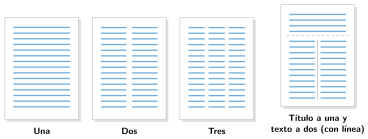

Diseño de página y columnas
Criterios: 4a, 4b, 4c
🤔 Pienso10 min
Qué hago aquí: Piensa un momento y contesta con lo que ya sabes. No pasa nada si no lo sabes: es para empezar.
Compara una carta del banco, un folleto y un periódico. ¿En cuál el texto va en columnas? ¿Por qué crees que es así?
📖 Leo y aprendo30 min
Qué hago aquí: Lee despacio, mira los dibujos y los ejemplos, y quédate con la idea clave del final.
Antes de escribir un documento conviene preparar la página. Todo está en la pestaña Disposición › grupo Configurar página:
espacio en blanco alrededor
vertical u horizontal
A4, A5, carta, sobre…
el texto en 2 o 3 columnas
Los márgenes normales de Word son de 2,5 cm arriba y abajo y 3 cm a los lados. En Márgenes personalizados puedes cambiarlos y añadir encuadernación (el espacio extra para grapar o encuadernar).
Las columnas hacen que las líneas sean más cortas y el texto se lea más deprisa. Se usan en folletos, boletines y revistas. En Más columnas eliges el número, el ancho, el espacio entre ellas y si llevan línea entre columnas; y en Aplicar a, si van en todo el documento o de aquí en adelante.

Para que el texto pase a la columna siguiente donde tú quieras, usa Disposición › Saltos › Columna (

+

+

).
✏️ Hago130 min
Qué hago aquí: Haz las actividades en orden. Empieza siempre por las básicas.
¿Qué orientación y tamaño usarías para: a) una carta; b) un cartel para el tablón; c) un diploma; d) una tarjeta de visita?
Copia un texto de unas 300 palabras sobre tu ciudad. Ponle márgenes de 2 cm, título a una columna y el texto a dos columnas con línea entre ellas.
En el mismo documento, haz que el último párrafo empiece arriba de la segunda columna con un salto de columna. Activa las marcas ¶ y localiza el salto.
Haz un boletín de la clase en orientación horizontal, a tres columnas de distinto ancho (la del centro, la más ancha), con un título a una columna.
Explica por qué un folleto a tres columnas se dobla bien en tres partes, pero solo si los márgenes y el espacio entre columnas están bien medidos.
🚀 Amplío (si quieres saber más)
Qué hago aquí: ¿Has terminado? Lee la curiosidad o elige el reto. Es voluntario.
Investiga la opción Márgenes simétricos (o páginas opuestas). ¿En qué documentos se usa? ¿Qué pasa con los márgenes interior y exterior?
✅ Compruebo10 min
Qué hago aquí: Contesta sin mirar la ficha y marca cómo lo llevas.